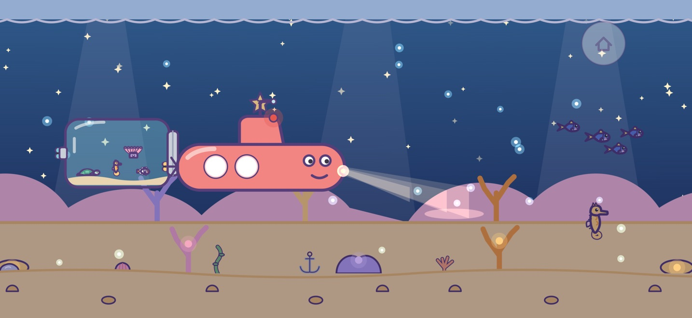
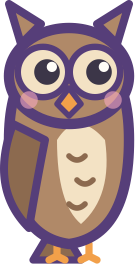

🌐 मराठी
Beepika: गाडी आणि विमान
होडी, रॉकेट व गोंडस प्राणी








Beepika हा 2 ते 5 वर्षांच्या मुलांसाठी गाड्या, विमाने, होड्या आणि अंतराळाचा एक प्रेमळ पहिला गेम आहे. तुमचे स्वतःचे वाहन बनवा आणि प्रवासाला निघा: वाटेत छोटे प्राणी भेटतील, जे आपले घर शोधत आहेत — त्यांना सोबत घेऊन मुक्कामापर्यंत पोहोचवा, आणि कोणताही प्राणी गॅरेजमध्ये तुमचा पाळीव सोबती होऊ शकतो. वाचायची गरज नाही, टायमर नाही आणि हरण्याची भीती नाही: प्रत्येक टॅपला आनंदी बीप, उडी किंवा चमचमाटाने उत्तर मिळते.

सगळ्या प्राण्यांना सोबत घ्या
- छोटे प्राणी आपले घर शोधत आहेत: ते रस्त्याच्या कडेला, फांद्यांवर, आकाशात आणि पाण्याखाली राहतात — प्रत्येक जण अगदी स्वतःसारखा दिसतो आणि टॅप केल्यावर स्वतःच्या आवाजात उत्तर देतो
- कोणताही प्राणी उचला आणि तो ट्रेलर, तराफा, टोपली, मत्स्यालय किंवा अंतराळ मॉड्यूलमध्ये उडी मारतो; बस, विमान आणि एअरशिपच्या खिडक्यांमधून प्रवासी डोकावतात
- प्रत्येक ग्रहाजवळ छोटे, प्रेमळ एलियन तरंगतात — उडती तबकडी त्यांना आपल्या प्रकाशझोताने वर उचलते
- शेवटी सगळे प्रवासी बाहेर उड्या मारतात आणि हात हलवतात

स्वतः बनवा
- बॉडी, रंग, चाके आणि सजावट निवडा — प्रत्येक जोडी छान जमते
- वर्कशॉपमध्ये ट्यूनिंग करा: इंजिन, बूस्टर, स्पॉयलर, दिवे आणि धुराऐवजी सायलेन्सरमधून जल्लोष — रंगीत कागद, आतषबाजी, साबणाचे फुगे, हार्ट, फुलपाखरे, संगीताचे सूर आणि बरेच काही
- तुमच्या वाहनावर टॅप करा आणि ते प्रत्येक वेळी नवी करामत करते — आणि आकाशातील चांदणी पकडण्यासाठी उडीचे मोठे बटण आहे
- प्रत्येक खोलीत एक प्रेमळ पाळीव प्राणी राहतो: गॅरेजमध्ये, हँगरमध्ये आणि धक्क्यावर. रॉकेट असेल तर हँगरचे अंतराळ स्थानक होते, पाणबुडी असेल तर धक्क्याचा पाण्याखालचा तळ होतो

कुठेही जा
- जंगल, समुद्रकिनारा, बर्फ, वाळवंट आणि परीकथांच्या देशांतून गाडी चालवा
- प्रसिद्ध इमारती असलेल्या शहरांवरून उडा आणि सूर्यमालेतील प्रत्येक ग्रहापर्यंत जा — मग तो फिरताना आणि त्याचे चंद्र त्याच्याभोवती फेऱ्या मारताना पाहा
- नद्या आणि समुद्रांतून होडी चालवा, प्रवाळ खडक, बुडालेली जहाजे आणि स्फटिकांच्या गुहांपर्यंत डुबकी मारा, आणि बोटाने पाणबुडी वर-खाली न्या
- सूर्यावर टॅप करा आणि दिवसाची रात्र होते; पाने गळतात, इंद्रधनुष्य चमकते आणि तुटणारे तारे सरकून जातात

छोट्या हातांसाठी बनवलेला
- मोठी बटणे, फक्त आडवी स्क्रीन, वाचण्याची गरज नाही
- प्रत्येक स्पर्शाला आवाज आणि हलके व्हायब्रेशन
- इंटरनेटशिवाय कुठेही चालतो — गाडीत, विमानात, आजीकडे
- कमी दिसणाऱ्या मुलांसाठीही: स्क्रीन रीडर VoiceOver बटणे आणि पात्रे वाचून दाखवतो
- मुलाला लखलखाटाचा त्रास होत असेल, तर सेटिंग्जमध्ये “मोशन कमी करा” चालू करा — गेम हादरे आणि जास्तीचे कॉन्फेटी काढून टाकतो
खेळ मुलाला कसा उपयोगी आहे
- चिमुकली बोटे अचूक हालचाली शिकतात: टॅप, प्राण्याला बोटाने सरकवणे, उडीचे बटण
- आपल्या कृतीने काहीतरी बदलते हे मूल पाहते: प्रत्येक स्पर्शाला हॉर्न, उडी किंवा चमक उत्तर देते, आणि सूर्य दिवसाची रात्र करतो
- इतरांची काळजी: छोटे प्राणी घर शोधत आहेत, मूल त्यांना शेवटपर्यंत पोहोचवते, आणि पाळीव प्राणी गॅरेजमध्ये वाट पाहतात
- कल्पनाशक्ती: कोणत्याही भागांनी आणि रंगांनी स्वतःचे वाहन
- जगाची ओळख: स्वतःच्या आवाजातले प्राणी, जंगले आणि समुद्र, शहरे आणि ग्रह
- आत्मविश्वास: हरणे शक्य नाही, ना टायमर ना घाई

मोफत खेळा, सगळ्यासाठी एकच खरेदी
मोफत: सेडान, छोटा ट्रक आणि अग्निशमन गाडी, सर्व रंग, जंगल आणि समुद्रकिनारा त्यांच्या प्राण्यांसह, नाइट मोड, हवामान आणि ऋतू, शिवाय हँगर आणि धक्क्याची एक झलक.
“सर्व काही अनलॉक करा” मुळे सर्व 27 वाहने खुली होतात — कार आणि खास वाहने, विमाने, रॉकेट आणि उडती तबकडी, होड्या आणि पाणबुड्या — ट्यूनिंगचा प्रत्येक भाग, चाक आणि सजावट, आणि सर्व 46 नकाशे: परीकथांचे देश, आठ शहरे, सूर्यमाला, समुद्र आणि पाण्याखालचे जग. एकदाच करायची खरेदी, जी फॅमिली शेअरिंगद्वारे कुटुंबासोबत शेअर करता येते. कोणतेही सबस्क्रिप्शन नाही.

मुलांसाठी सुरक्षित
- जाहिराती नाहीत, ट्रॅकिंग नाही, ॲनालिटिक्स नाही, खाती नाहीत
- प्रगती फक्त याच डिव्हाइसवर सेव्ह होते; आम्हाला किंवा इतर कोणालाही काहीही पाठवले जात नाही
- खरेदी पालकांच्या तपासणीमागे सुरक्षित आहे
- गेमबाहेर नेणारी कोणतीही लिंक नाही
प्रश्न किंवा कल्पना? सपोर्ट पेजला भेट द्या — आम्ही प्रत्येक संदेश वाचतो.
❤️
आम्ही दोन लहान मुलांचं एक साधं कुटुंब आहोत. मी आणि माझी पत्नी त्यांच्यासाठी खेळणी बनवतो, आणि त्यातली सर्वात छान खेळणी मनापासून इतर मुलांसोबत वाटतो.